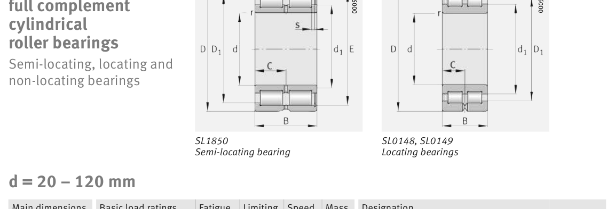

SL014918 is a FAG cylindrical roller bearing, bore 90 mm, O.D. 125 mm, width 35 mm, dynamic rating 153 kN. Dimensions, drawing, interchanges and price.
Original catalogue drawing - FAG Schaeffler HR 1, page 542

Scanned from the manufacturer catalogue page listing this part number. All part numbers printed on that table share the same drawing.
Scale cross-section
Blue = inner / outer ring, yellow = rolling element. Drawn to scale from this part's own
dimensions for selection reference only - not a manufacturing or assembly drawing.
Dimension table (mm / inch)
Symbol
Dimension
mm
inch
d
Bore diameter
90
3.5433
D
Outside diameter
125
4.9213
B
Inner-ring / bearing width
35
1.378
C
Cup / outer-ring width
17.5
0.689
r
Chamfer (min)
1.1
0.0433
Notes
Weights are given in kg. Load ratings are shown in both the original catalogue units and the converted value (1 N = 0.2248 lbf). Data is provided for selection reference only - confirm against the latest official catalogue before ordering.
Main dimensions
Bore d (mm)
90
Outside dia. D (mm)
125
Width B (mm)
35
Cup width C (mm)
17.5
Inner-ring OD d1 (mm)
103.9
Inner-ring shoulder dia. D1 (mm)
110.7
Load ratings & speeds
Basic dynamic load rating Cr (lbs)
34396
Basic static load rating Cor (lbs)
65195
Basic dynamic load rating Cr (N)
153000
Basic static load rating C0r (N)
290000
Fatigue limit load Cur (N)
39000
Limiting speed nG (rpm)
3,050
Reference speed nB (rpm)
1,870
Weight
Weight (kg)
1.35
Mounting dimensions (fillets / shoulders)
Housing fillet r max (mm)
1.1
Shaft shoulder dc (mm)
103.5
Housing shoulder Da (mm)
111
Housing fillet ra max (mm)
1.1
Bearing life (ISO 281 basic rating life)
C / P
Equivalent load P (N)
L10 (106 rev)
L10h at 1,000 rpm
4
38,250
102
1,693
6
25,500
392
6,542
8
19,125
1,024
17,067
10
15,300
2,154
35,907
15
10,200
8,323
138,724
Basic rating life per ISO 281: L10 = (C/P)10/3 with C = 153,000 N. Hours = L10 x 106 / (60n). Life-modification factors for lubrication, contamination and temperature (aISO) are not included.
Source & traceability
Brand
FAG
Source catalogue
FAG / Schaeffler Rolling Bearings HR 1
Catalogue page
p.542 (dimensions)
Load ratings in newtons, fatigue limit load Cur, limiting speed nG and reference speed nB.
Send us the quantity you need and we will come back with price and
lead time, normally within 24 hours. Equivalent parts from other brands can be quoted at the same time.